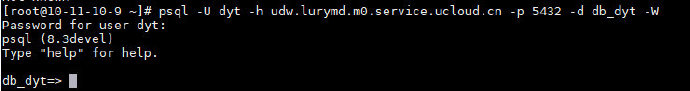
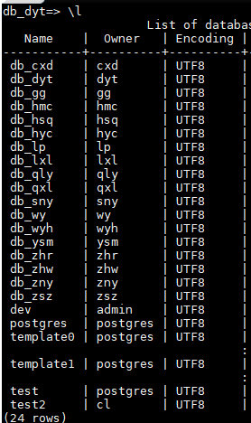
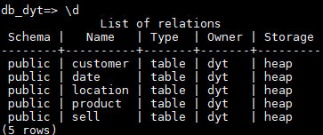
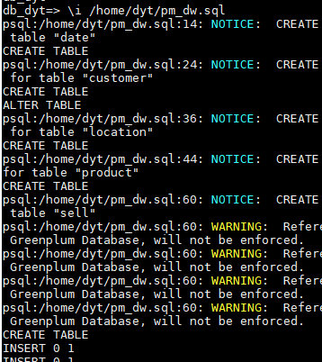
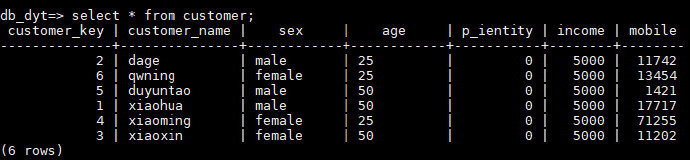
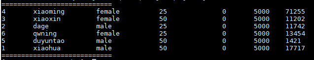

熟悉UDW环境
连接远程数据仓库
使用SSH连接远程云主机
Ucloud基于PostgreSQL，很多操作类似，参考文档
使用postgreSQL连接远程数据仓库
psql -U dyt -h udw.lurymd.m0.service.ucloud.cn -p 5432 -d db_dyt -W

查看UDW的表格设计
常用查询命令
- 列出所有数据库
\l- 
- 显示目前数据库的关系表
\d- 
- 导入SQL文件进行创建table
- 
- 简单查询命令
- 
运行JAR包
在本地写好JDBC程序，例如：
//package com.database.jdbctest.entity; //import com.database.jdbctest.JDBCOperation;
import java.sql.*;
public class JDBCTest {
public static void main(String args[]) {
// Connection op = getAll();
getAll("customer");
// op.insert(new S("S6","徐瑞", "20", "上海"));
// op.insert(new S("S7","胡", "30", "重庆"));
// op.getAll();
// op.update(new S("S7","耀艺", "", "上海"));
// op.delete("S6");
// op.getAll();
// op.SelectCity("上海");
}
public static Connection getConn() {
String driver = "org.postgresql.Driver";
String url = "jdbc:postgresql://udw.lurymd.m0.service.ucloud.cn:5432/db_dyt";
String username = "dyt";
String password = "dyt123";
Connection conn = null;
try {
Class.forName(driver); // classLoader,加载对应驱动
conn = DriverManager.getConnection(url, username, password);
} catch (ClassNotFoundException e) {
e.printStackTrace();
} catch (SQLException e) {
e.printStackTrace();
}
return conn;
}
/**
* @method Integer getAll() 查询并打印表中数据
* @return Integer 查询并打印表中数据
*/
public static Integer getAll(String table) {
Connection conn = getConn();
String sql = "select * from "+table;
PreparedStatement pstmt;
try {
pstmt = (PreparedStatement)conn.prepareStatement(sql);
ResultSet rs = pstmt.executeQuery();
int col = rs.getMetaData().getColumnCount();
System.out.println("============================");
// 打印每一列
while (rs.next()) {
for (int i = 1; i <= col; i++) {
System.out.print(rs.getString(i) + "\t");
if ((i == 2) && (rs.getString(i).length() < 8)) {
System.out.print("\t");
}
}
System.out.println("");
}
System.out.println("============================");
} catch (SQLException e) {
e.printStackTrace();
}
return null;
}
}
```
放入服务器中并指定JDBC的jar包生成class
javac -cp ".:postgresql-jdbc.jar" JDBCTest.java
运行：
java -cp ".:postgresql-jdbc.jar" JDBCTest
